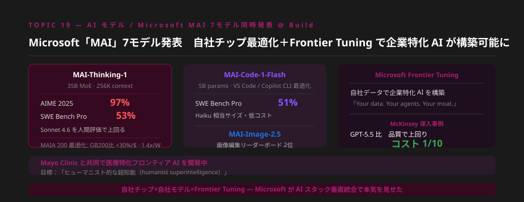
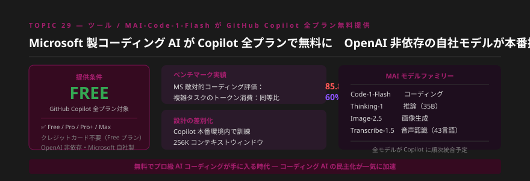
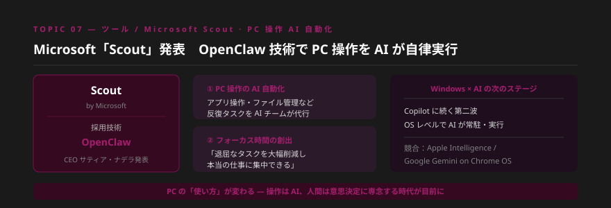
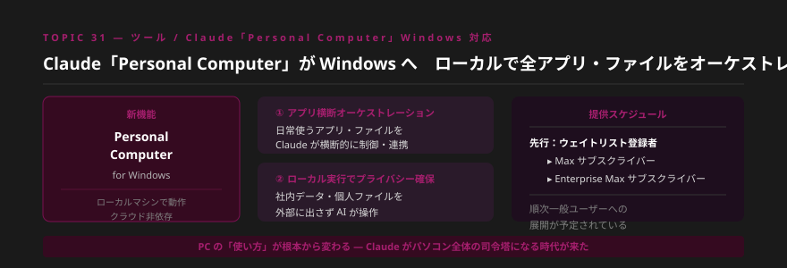
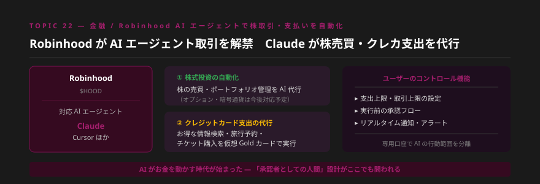
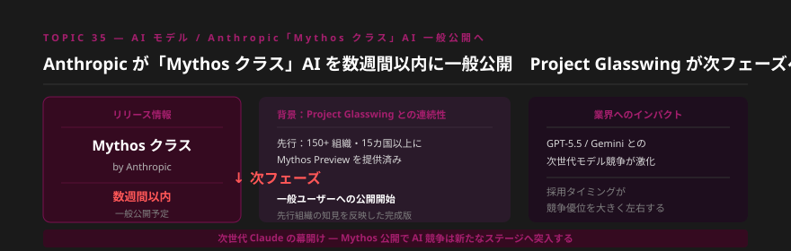
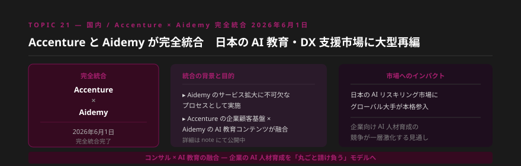
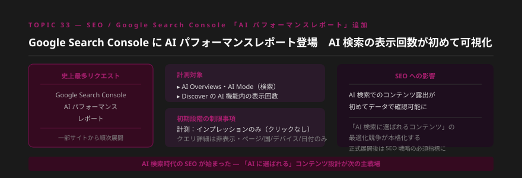
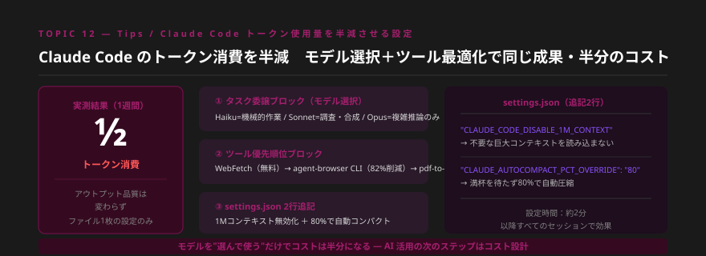
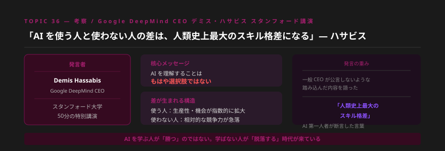

- Microsoft Build でMAI 7モデルを同時発表。自社チップ最適化・Frontier Tuningで「企業専用AI」を構築できる時代が到来し、MAI-Code-1-FlashはGitHub Copilot全プランで無料提供開始と、OpenAI非依存の垂直統合戦略が鮮明になった。
- AnthropicがClaude「Mythos クラス」AIを数週間以内に一般公開すると表明し、Personal Computer for WindowsでPC全体の操作制御も解禁。Robinhoodも株売買・クレカ支出をAIエージェントに委任する機能を正式展開し、AIが「お金を動かす」時代が始まった。
- DeepMind CEO Hassabisが「AI使用者と非使用者の格差は人類史上最大になる」と断言。国内ではAccenture×Aidemy完全統合（6/1）・東大高校生AI教育・Google Search Console AI レポート追加など、AI活用の底上げが加速する1週間となった。
Topic 01 — Global / Microsoft Build Microsoft Build：MAI 7モデル同時発表 ― 自社チップ最適化＋Frontier Tuningで企業専用AIへ

何が起きたか
Microsoft Build 2026にて、MAI（Microsoft AI）シリーズ7モデルを同時発表した。主力はテキスト基盤モデルMAI-Thinking-1（35B MoE・256Kコンテキスト）で、AIME 2025で97%、SWE Bench Proで53%を達成し、人間評価ではClaude Sonnet 4.6を上回る結果が出ている。自社シリコン「MAIA 200」に最適化しており、GB200と比較してコストパフォーマンス30%向上・電力効率1.4倍を実現。画像生成のMAI-Image-2.5はリーダーボード2位、コーディングのMAI-Code-1-Flash（5Bパラメータ）はSWE Bench Pro 51%と、Haiku相当サイズで驚異的な性能を示した。
さらにMicrosoft Frontier Tuningを発表。企業が自社データでMAIモデルをカスタマイズし、「企業専用AIエージェント」を構築できる。マッキンゼーの導入事例ではGPT-5.5より品質が高く、コストは10分の1を実現。Mayo Clinicとは医療特化フロンティアAIを共同開発中。
噛み砕くと
MicrosoftがOpenAIから「借りるのをやめて、自分で作る」宣言をした週です。これは単なる競争の話ではなく、「自社モデル×自社チップ×Frontier Tuningによる垂直統合」で企業専用AIを安く・速く・安全に提供できる体制が整ったことを意味します。マッキンゼーがGPT-5.5より品質が高く10分の1のコストで実現した事例は、「大企業が自社でAIをチューニングする時代」の到来を示すシグナルです。
Frontier Tuningは「企業専用AI構築支援」という新しいコンサルサービスの扉を開く。「汎用AIを使う」から「自社データでチューニングした専用AI」へのシフトを支援するポジションが今後急速に価値を持ちます。マッキンゼー事例のように「品質向上＋コスト1/10」という数値的な訴求ができるサービス設計を今から検討する価値があります。まずは1社のクライアントと「Frontier Tuningで何が変わるか」を試算してみましょう。
明日から使える業務活用
- Microsoft MAI vs OpenAI の比較表を作成し、クライアントへの選定支援資料として整備する
- Frontier Tuningで「自社専用AIを作る」提案書のテンプレートを1本作成する
- MAI-Code-1-FlashをVS Code + GitHub Copilotで試し、コーディング生産性の変化を数値で記録する
Topic 02 — ツール MAI-Code-1-Flash が GitHub Copilot 全プランで無料提供開始

何が起きたか
MicrosoftがMAI-Code-1-FlashをGitHub Copilot全プラン（Free・Pro・Pro+・Max）で無料提供開始した。OpenAIのモデルを「借りる」のではなく、Microsoft自身が開発したモデルをCopilotに組み込んだ初のケースだ。5BパラメータながらMicrosoftの敵対的コーディングベンチマーク85.8%、複雑タスクのトークン消費を同等モデル比60%削減、256Kコンテキストウィンドウを実現。Copilotの本番環境内でトレーニングされており、実務に即した精度の高さが特徴。VS CodeとGitHub Copilot CLIに最適化されている。
噛み砕くと
「無料でプロ級のコーディングAIが手に入る時代」が正式に到来しました。GitHubアカウントを作るだけで、VS Code上でMAI-Code-1-Flashが使えます。「AIコーディングツールは有料」という常識が崩れた週であり、非エンジニアでもAIによるコード生成の恩恵を受けやすくなりました。60%のトークン削減は長期的なコスト差として積み上がります。
クライアントへの「AI導入コスト」の説明が変わります。GitHub Copilot Freeで始めてもらい、効果を実感してもらってからアップグレードを提案する「無料スタート→効果検証→有料移行」というAI導入フローが現実的になりました。特に「コストが怖い」と言うクライアントへの最初の一手として有効です。今週中に自分でセットアップし、体験レポートを作成しておきましょう。
明日から使える業務活用
- GitHub Copilot Freeに登録し、VS CodeでMAI-Code-1-Flashを試す（所要5分）
- 「GitHub Copilot Free + MAI-Code-1-Flash セットアップ手順書」を1枚作成してクライアントに共有する
- トークン60%削減を自社の月間使用量に当てはめてコスト削減額を試算し、提案材料にする
Topic 03 — ツール Microsoft「Scout」発表 ― OpenClaw 技術で PC 操作を AI が自律実行

何が起きたか
Microsoft Build にて CEO サティア・ナデラがPC操作AI「Scout」を正式発表した。OpenClaw技術を基盤とし、Windows上でアプリ操作・ファイル管理・ブラウザ操作などの反復タスクをAIチームが代行する。「退屈なタスクを大幅削減し、本当の仕事に集中できる新しい方法」とナデラが説明した。同週、OpenClawはMicrosoftとの提携を別途発表し、社内Windows環境でのセキュアなエンタープライズ展開が可能になった。IT部門承認済み・ガバナンス対応の形でPC自動化が全社展開できる体制が整った。
噛み砕くと
「PCを使って仕事をする」から「PCを操作するAIに仕事を任せる」へのシフトが、企業レベルで正式にスタートしました。CopilotがチャットでAIと対話するものだったとすれば、Scoutは「AIが実際にパソコンを動かしてくれる」次の段階です。OpenClawとの連携でセキュリティ問題もクリアしており、企業IT部門が承認できる形になった点が普及を加速させます。
Scout + OpenClawのエンタープライズ展開は、「PC操作の自動化コンサル」という新しい専門領域を生み出す。どの反復業務をScoutに任せるか、どう監視・管理するか、従業員のロールをどう再設計するか——これらはすべてコンサルの仕事です。「Scoutで自動化できる業務リスト」を業種別に作成しておくことが、来四半期の提案を左右する可能性があります。
明日から使える業務活用
- 自社・クライアントの「毎日繰り返すPC操作業務」を10個書き出し、Scout自動化候補を特定する
- 「PC操作自動化による工数削減試算シート」を1枚作成する
- OpenClawのエンタープライズ展開事例を収集し、セキュリティ懸念のあるクライアントへの説得材料にする
Topic 04 — ツール / Anthropic Claude「Personal Computer」Windows 対応 ― ローカルでアプリ・ファイルをオーケストレーション

何が起きたか
AnthropicがClaude「Personal Computer」のWindows対応を発表した。ローカルマシン上で動作し、日常使うアプリ・ファイル全体をClaudeが横断的に制御・連携する。クラウド非依存のローカル実行によりプライバシーを確保しながら、社内データをAIが扱える。まずMaxおよびEnterprise Maxサブスクライバーのウェイトリスト登録者から順次展開し、その後一般ユーザーへの展開が予定されている。
噛み砕くと
MicrosoftのScoutと同週に発表されたことで、「PC全体をAIが制御する時代」が2大プレーヤーから同時に始まった週になりました。Claudeのアドバンテージは「ローカル実行によるプライバシー保護」。クラウドに情報を送らず、手元のPCで完結するため、機密情報を扱う医療・法務・金融業界のクライアントへの訴求に強みがあります。
Scout（Microsoft）とPersonal Computer（Anthropic）の比較は、クライアントへの提案で今後頻出する論点になります。「クラウド型 vs ローカル型」「既存Windowsエコシステム vs Claudeのセキュリティ優位」という軸で選定基準を整理した比較資料を今から準備しておくと、来月の提案で差をつけられます。特に機密性の高いデータを扱う業界クライアントにはPersonal Computerの優位性を強調しましょう。
明日から使える業務活用
- Claude MaxプランでPersonal Computerウェイトリストに登録する
- Scout vs Personal Computer の比較表を作成し、業種別の推奨を整理する
- ローカル実行のプライバシーメリットを訴求した「機密業務向けAI提案書」を作成する
Topic 05 — 金融 Robinhood が AI エージェント取引を解禁 ― Claude が株売買・クレカ支出を代行

何が起きたか
Robinhood MarketsがAIエージェントによる株取引・クレジットカード支出の自動代行機能を正式ローンチした。ユーザーはAnthropicのClaudeやCursorなどのAIツールを専用口座に接続し、設定した上限・アラートの範囲内で株の売買・ポートフォリオ管理・クレカ支出を委任できる。クレカのAIエージェントは仮想Goldカードを使ってお得な情報検索・旅行予約・チケット購入まで実行する。現在は株取引が中心で、オプション・暗号通貨は今後対応予定。
噛み砕くと
「AIがお金を動かす」時代が正式に始まりました。これはSFの話ではなく、今週から実際にClaudeが株を買ったり旅行を予約したりする仕組みが動いています。ユーザーは「承認者・監視者」としての立場を保ちながら、実際の取引はAIが実行する——これがAIエージェント活用の実社会での第一歩として歴史的な意味を持ちます。
Robinhoodの事例は「AIに意思決定を委任する際のガバナンス設計」というコンサルテーマを前景化させます。上限設定・承認フロー・リアルタイム通知という3層のコントロール設計は、あらゆる業務でのAIエージェント導入の標準モデルになりえます。「どこまでAIに任せ、どこで人間が判断するか」のフレームワーク作成を提案メニューに追加する価値があります。
明日から使える業務活用
- 自社・クライアントの業務で「AIに委任できる判断」と「人間が判断すべきこと」を整理したマトリクスを作成する
- 「AI エージェント導入のガバナンス設計テンプレート」を1本作成し、提案メニューに追加する
- Robinhood事例を金融・保険クライアントへの「AIエージェント活用可能性」の訴求材料として活用する
Topic 06 — Global / Anthropic Anthropic「Mythos クラス」AI を数週間以内に一般公開へ

何が起きたか
Anthropicが次世代フラッグシップモデル「Mythos クラス」AIを数週間以内に一般公開すると表明した。すでにProject Glasswingを通じて世界15カ国以上・150以上の組織に先行プレビューを提供中であり、そこで得たフィードバックを反映した完成版の一般公開が目前に迫っている。GPT-5.5・Gemini Ultra等の次世代モデルとのフロンティア競争が、6月中に新たな局面を迎える見通しだ。
噛み砕くと
これまで一部の先行組織だけが使えた「次世代Claude」が、もうすぐ誰でも使える形になります。先行利用した組織が既に競争優位を積み上げており、公開後に「今すぐキャッチアップが必要」という状況が生まれます。これはクライアントへの「今が始め時」の訴求に使える非常に強力なシグナルです。
Mythosクラス公開は、既存のClaude活用ワークフローを全面アップグレードするタイミングになります。今から「Mythosクラスへの移行計画」を自社・クライアント向けに準備しておくことで、リリース直後に動けるアドバンテージが生まれます。特に「現行Claude→Mythosへの乗り換え提案書テンプレート」を先回りして用意しておくと、競合コンサルとの差別化になります。
明日から使える業務活用
- Anthropicの公式ブログ・X（Twitter）をウォッチし、Mythos公開のアナウンスを最速でキャッチする
- 「新モデル公開時のクライアント通知テンプレート」を作成し、リリース直後に一斉送信できる準備をする
- 現在のClaude活用状況をクライアントごとに棚卸しし、Mythosへのアップグレード優先順位を整理する
Topic 07 — 国内 Accenture × Aidemy 完全統合（6月1日）― 日本の AI 教育・DX 支援市場に大型再編

何が起きたか
2026年6月1日、グローバルコンサルティング大手Accentureと日本のAI教育・DXプラットフォームAidemyが完全統合を完了した。Aideo myのサービス拡大を加速するための「必要なプロセス」と説明されており、Accentureの企業顧客基盤とAidemy のAI教育コンテンツが融合することで、企業向けAI人材育成を丸ごと請け負う体制が整った。詳細についてはnoteにて公開されている。
噛み砕くと
「AI教育」×「大手コンサル」の組み合わせが日本国内で本格化した出来事です。これまでAI研修はIT企業や専門スクールが担っていましたが、Accentureのような大手コンサルが「AI人材育成ごとパッケージ提供する」ビジネスが成立し始めたことを示しています。中小企業のAI導入支援をしている独立コンサルタントには、競合・協業の両面で注視が必要です。
大手コンサル×AI教育の統合は、「自社のどの強みで差別化するか」を明確にするよう迫るシグナルです。Accentureが大企業向けのAI人材育成を担うなら、中堅・中小企業や特定業界への特化でニッチを守れます。また「AI研修を組み合わせたDX支援」サービスを独自に設計し、「教えながら導入する」というパッケージを提案する方向性も有効です。競合の動きを分析して自分のポジショニングを再点検しましょう。
明日から使える業務活用
- 自社のクライアント層（規模・業界）をリストアップし、Accenture×Aideo myが狙う市場との重複・差別化を整理する
- 「AI研修＋導入支援セット」のサービスパッケージを1案設計する
- 中堅・中小企業向けの「AI人材育成プログラム提案書テンプレート」を作成する
Topic 08 — SEO / ツール Google Search Console に AI パフォーマンスレポート登場 ― AI 検索の表示回数が初めて可視化

何が起きたか
Googleが「Google Search ConsoleへのAIパフォーマンスレポート追加」を発表した。Search Console史上最多のリクエスト数を誇る要望がついに実現。AI Overviews・AI Modeでの検索、およびDiscoverのAI機能内でのコンテンツの表示回数（インプレッション）が初めてデータとして確認できるようになる。対象は一部のサイトから段階的に展開。現段階ではクリックデータは含まれず、ページ・国・デバイス・日付単位の表示回数のみ。クエリ詳細は初期フェーズでは非表示。
噛み砕くと
これまで「AI検索でどのくらい自分のコンテンツが表示されているか」は全くわかりませんでした。このレポートの登場で、「AI検索に選ばれるコンテンツ」と「選ばれないコンテンツ」の差が数値として見えるようになる第一歩が踏み出されました。クリックは計測されないため「表示されているが読まれているか？」という問いは残りますが、コンテンツ最適化の方向性を判断する材料として極めて重要です。
AI検索時代のSEOは「クリックさせる」から「AIに引用される」への移行が進んでいます。このレポートが本格展開されれば、「AI検索への最適化（AIO：AI Optimization）」という新しいコンサル領域が立ち上がります。今のうちに「AIパフォーマンスレポートの読み方」「AI検索に選ばれるコンテンツの条件」を研究してコンテンツを持っておくと、展開後に一気に差をつけられます。
明日から使える業務活用
- Google Search Consoleで自社サイトがAIパフォーマンスレポートの対象になっているか確認する
- 「AI検索最適化（AIO）入門ガイド」を1枚作成し、Webマーケ担当クライアントに共有する
- 自社のブログ・コンテンツをAIに引用されやすい構造（明確な見出し・数値・一次情報）に最適化する
Topic 09 — Tips Claude Code のトークン消費を半減する設定 ― モデル選択＋ツール最適化＋2行で実現

何が起きたか
Claude Codeのヘビーユーザーが1週間の実測データをもとに「設定ファイル1枚でトークン消費を半減した方法」を公開し、広く拡散された。ポイントは3つ。①タスク委譲ブロック：タスクの複雑さに応じてHaiku（機械的作業）／Sonnet（調査・合成）／Opus（複雑推論）を使い分ける設計、②ツール優先順位ブロック：WebFetch（無料）→agent-browser CLI（スクリーンショット比82%削減）→PDF-to-textの順で使用、③settings.json 2行追記：「CLAUDE_CODE_DISABLE_1M_CONTEXT」で不要な大コンテキスト読み込みを防止、「CLAUDE_AUTOCOMPACT_PCT_OVERRIDE: 80」で80%時点で自動圧縮。設定時間は約2分で、以降の全セッションで効果が持続する。
噛み砕くと
Claude Codeを使っていると月々のAPI費用が想定以上になることがあります。この設定は「同じ仕事をより少ないトークンでこなす」ためのもの。たとえるなら「エアコンの設定温度を1度下げるだけで電気代が変わる」のと同じ発想です。2分の設定で毎回のセッションが効率化されるため、長く使えば使うほど恩恵が積み上がる仕組みです。
Claude Code活用が拡大するにつれ、「AIコスト管理」はコンサルが自社でも・クライアント向けにも提供できる新しい価値になります。特にトークン半減という具体的な数値は、「AI活用のROI改善」として説得力があります。「Claude Code導入＋コスト最適化設定」をセットで提供するサービスメニューを考えてみましょう。導入支援だけでなく「使い続けるためのコスト設計」まで担えると、長期的な関係構築につながります。
明日から使える業務活用
- 今すぐsettings.jsonに2行追記する（CLAUDE_CODE_DISABLE_1M_CONTEXT・CLAUDE_AUTOCOMPACT_PCT_OVERRIDE: 80）
- CLAUDE.mdにモデル選択ルール（Haiku/Sonnet/Opus）を追記し、実際のトークン消費変化を1週間測定する
- 測定結果を「Claude Code コスト最適化レポート」としてまとめ、活用中のクライアントに共有する
Topic 10 — 考察 Hassabis「AI を使う人と使わない人の差は人類史上最大のスキル格差になる」

何が起きたか
Google DeepMind CEOデミス・ハサビスがスタンフォード大学での50分の特別講演で、「AIを使う人と使わない人の差は、人類史上最大のスキル格差になる」と断言した。一般的なCEOが公言しないような踏み込んだ内容で、参加者から「$25万のクローズドルームで聞ける内容」と評される発言が続いた。「AIを理解することはもはや選択肢ではない」という主張は、AI研究の最前線にいる人物だからこそ持つリアリティがあった。
噛み砕くと
これは「AIを使えば有利になる」という話ではありません。「使わない人は相対的に脱落していく」という警告です。これまでの技術格差（PCが使える/使えない、ネットが使える/使えない）と比べて、AIによる格差は圧倒的に大きく・速く広がるというのがハサビスの見立てです。この発言の重みは、「世界最高レベルのAI研究者」が断言しているという点にあります。
ハサビスの言葉は、クライアントへの「AI導入の緊急性」を伝える最強の引用材料になります。「DeepMind CEOが人類史上最大の格差と断言した」という事実は、AI導入を先送りしているクライアントの意識を変える力を持っています。提案書の冒頭・商談の導入部分に「なぜ今なのか」の文脈として積極的に活用しましょう。また自分自身も「AIを使いこなす側」にいることを証明し続けることが、コンサルとしての存在価値の根拠になります。
明日から使える業務活用
- 提案書・提案メールの冒頭に「DeepMind CEO Hassabis：人類史上最大のスキル格差」という文脈を追加する
- 「なぜ今AIを導入すべきか」を3分で説明できるトークスクリプトを作成し、商談で使う
- 自分が「AIを使う側」にいることを示す実績・事例を月1本以上アウトプットする習慣を作る
今週のまとめ ― 「使う道具」から「所有する戦略」へ
今週は「AIが単なるツールから、企業・個人が所有・設計するものへ」というシフトが複数の出来事を通じて一気に進んだ週でした。MicrosoftのFrontier Tuningは「AIを借りる」から「AIを自社データで作る」へ、Robinhoodは「AIに相談する」から「AIに取引を委任する」へ、Personal ComputerとScoutはPCそのものをAIが動かす時代の幕開けを告げています。
ハサビスの「人類史上最大のスキル格差」という言葉は、この変化のスピードを圧縮して表現しています。今週起きたことを「自分ごと」として捉え、来週1つでも行動に移すことが、その格差の「使う側」に踏みとどまる条件です。
| # | 今週の最優先アクション | 難易度・目安時間 |
|---|---|---|
| 1 | GitHub Copilot Free に登録しMAI-Code-1-Flashをセットアップする | ★☆☆ 5分 |
| 2 | settings.json に2行追記してClaude Codeトークン消費を最適化する | ★☆☆ 2分 |
| 3 | CLAUDE.mdにモデル選択ルール（Haiku/Sonnet/Opus）を追記する | ★★☆ 15分 |
| 4 | 提案書にHassabis「人類史上最大のスキル格差」の引用を追加する | ★☆☆ 10分 |
| 5 | Anthropic Mythos公開に備えて「新モデル通知テンプレート」を作成する | ★★☆ 20分 |